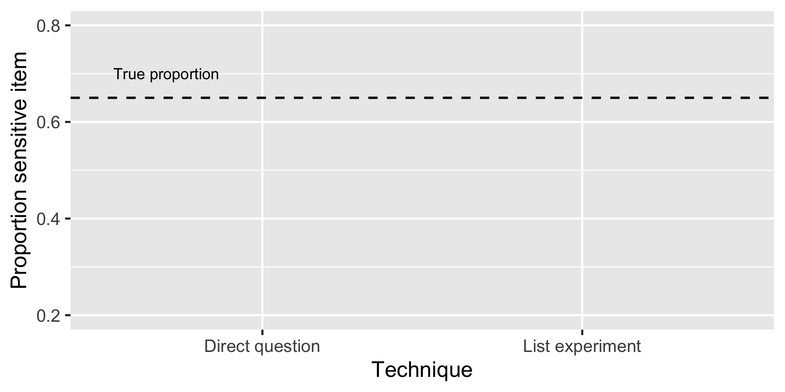
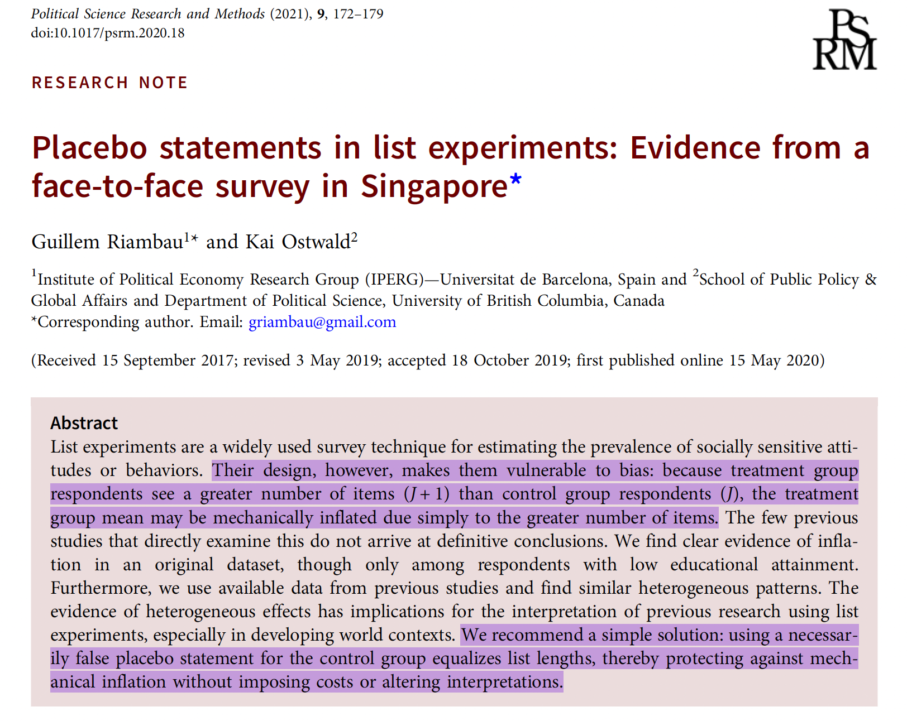
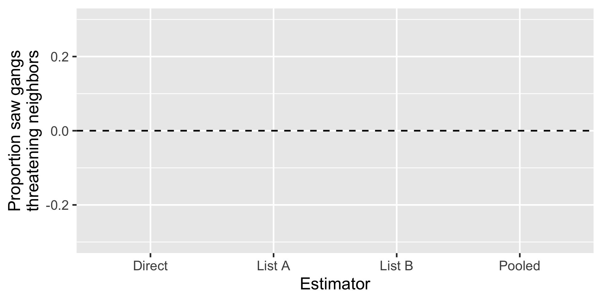
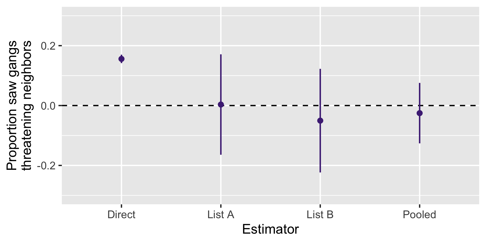
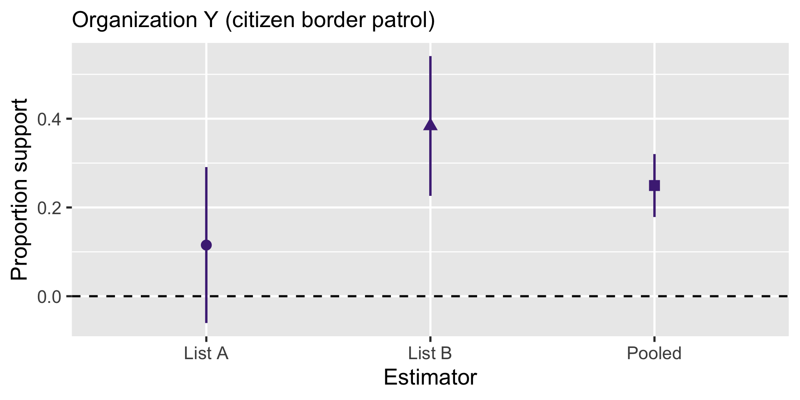
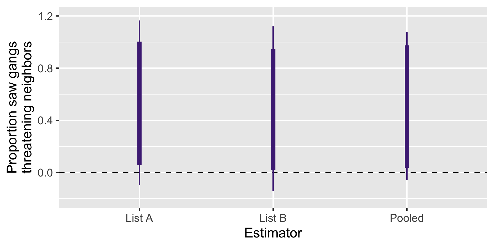
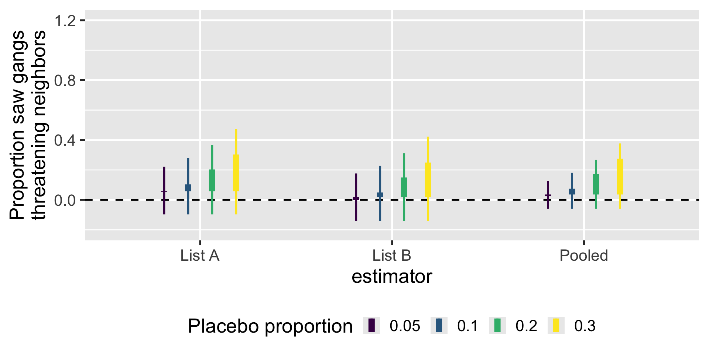
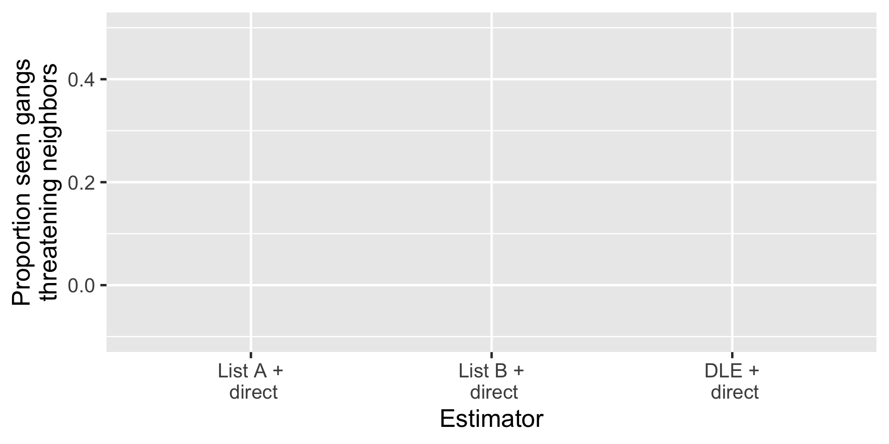
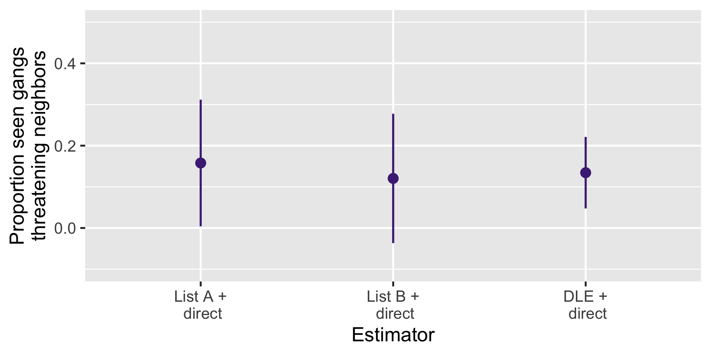

Recovering Informative Estimates
in Failed Placebo-Controlled
List Experiments
Gustavo Diaz
Northwestern University
gustavo.diaz@northwestern.edu
Paper and slides: gustavodiaz.org/talk

ERC Starting Grant
Criminal Governance in Unexpected Contexts: the Role of the Welfare State in Latin America
with
- Verónica Pérez Bentancur (Universidad de la República)
- Ines Fynn (Universidad Católica del Uruguay )
- Lucía Tiscornia (University College Dublin)
Takeaways
We included a placebo statement in our list experiment and it broke everything
Use ideas from partial identification to recover informative estimates
Looking for more ideas to refine bounds
Agenda
Improving list experiments
Our failed placebo (double) list experiment
Recovering informative estimates
Discussion
List Experiments
Now I am going to read you things that make people angry or upset
After I read them all, tell me HOW MANY of them upset you
I don’t want to know which ones, just tell me HOW MANY
Control group
- The federal government increasing tax on gasoline
- Professional athletes getting million dollar contracts
- Large corporations polluting the environment
I don’t want to know which ones, just tell me HOW MANY
Treatment group
- The federal government increasing tax on gasoline
- Professional athletes getting million dollar contracts
- Large corporations polluting the environment
I don’t want to know which ones, just tell me HOW MANY
Treatment group
- The federal government increasing tax on gasoline
- Professional athletes getting million dollar contracts
- Large corporations polluting the environment
- A black family moving next door
Reduces sensitivity bias
Reduces sensitivity bias

Reduces sensitivity bias

Concerns with list experiments
Strategic errors
Non-strategic errors
Concerns with list experiments
Strategic errors
Non-strategic errors

Artificial inflation
| Control | Treatment |
|---|---|
| The federal government increasing tax on gasoline | The federal government increasing tax on gasoline |
| Professional athletes getting million dollar contracts | Professional athletes getting million dollar contracts |
| Large corporations polluting the environment | Large corporations polluting the environment |
| A black family moving next door |
Solution: Add a placebo statement
| Control | Treatment |
|---|---|
| The federal government increasing tax on gasoline | The federal government increasing tax on gasoline |
| Professional athletes getting million dollar contracts | Professional athletes getting million dollar contracts |
| Large corporations polluting the environment | Large corporations polluting the environment |
| A black family moving next door |
Solution: Add a placebo statement
| Control | Treatment |
|---|---|
| The federal government increasing tax on gasoline | The federal government increasing tax on gasoline |
| Professional athletes getting million dollar contracts | Professional athletes getting million dollar contracts |
| Large corporations polluting the environment | Large corporations polluting the environment |
| Finding money in a jacket pocket | A black family moving next door |
Placebo-controlled list experiments
Reduce bias from non-strategic response errors
But a bad placebo item can introduce attenuation bias
It happened to us!
Our Experiment
Double list experiment
Things people have experienced in the last six months:
| List A | List B |
|---|---|
| Saw people doing sports | Saw people playing soccer |
| Visited friends | Chatted with friends |
| Activities by feminist groups | Activities by LGBTQ groups |
| Went to church | Went to charity events |
Manipulations
Sensitive items:
- Saw criminal groups threatening neighbors
- Saw criminal groups evicting neighbors from their homes
- Saw criminal groups making donations to neighbors
- Saw criminal groups offering work to neighbors
Manipulations
Sensitive items:
- Saw criminal groups threatening neighbors
- Saw criminal groups evicting neighbors from their homes
- Saw criminal groups making donations to neighbors
- Saw criminal groups offering work to neighbors
Manipulations
Placebo item:
- I did not drink mate
Yerba mate

Double list experiment
Things people have experienced in the last six months:
| List A | List B |
|---|---|
| Saw people doing sports | Saw people playing soccer |
| Visited friends | Chatted with friends |
| Activities by feminist groups | Activities by LGBTQ groups |
| Went to church | Went to charity events |
Double list experiment
Things people have experienced in the last six months:
| List A | List B |
|---|---|
| Saw people doing sports | Saw people playing soccer |
| Visited friends | Chatted with friends |
| Activities by feminist groups | Activities by LGBTQ groups |
| Went to church | Went to charity events |
| Saw criminal groups threatening neighbors |
I did not drink mate |
Double list experiment
Things people have experienced in the last six months:
| List A | List B |
|---|---|
| Saw people doing sports | Saw people playing soccer |
| Visited friends | Chatted with friends |
| Activities by feminist groups | Activities by LGBTQ groups |
| Went to church | Went to charity events |
| I did not drink mate | Saw criminal groups threatening neighbors |
Three prevalence estimators
\[ \hat{\tau}_A = \widehat E[Y_{iA }(1)] - \widehat E[Y_{iA }(0)] \]
\[ \hat{\tau}_B = \widehat E[Y_{iB }(1)] - \widehat E[Y_{iB }(0)] \]
Results

Results

Usual problem

This is even worse

What do we do?
Problem: Estimates are no longer valid
Idea: Imagine how responses would have looked like without including the placebo
Equivalent to assuming estimated proportion is partially identified
Produce non-parametric bounds
Usually uninformative, but list experiment structure helps
Sharp bounds
Main idea: Assume nothing beyond observed data + SUTVA
Implication: Only control responses change
Sharp bounds: Impute minimun/maximum possible value
Not very informative

What else can we assume?
List experiment assumptions
- No liars: Rs do not endorse sensitive item when they it does not apply to them
- No design effects: Adding/removing an item does not affect how R responds to other items
Idea: These also need to be true for placebo!
Implications:
- Control responses can only decrease
- …by a magnitude of one
List experiment bounds
Implications:
- Control responses can only decrease
- …by a magnitude of one
Lower bound: All 5s become 4s
Upper bound: Everything decreases by one unless already 0
A bit more informative?

Can we do better?
We did not include a direct question for the placebo
Refinement
If you know the proportion of placebo holders in the population of interest
Lower bound: All 5s become 4s (unchanged)
Upper bound:
\[ \hat \tau_{H} = (1- \delta) \times \bar V_{obs} + \delta \times \bar V_{max} \]
\(\delta\): known placebo proportion
\(\bar V_{obs}\): LE estimate with observed data
\(\bar V_{max}\): LE estimate with “all decrease” data
Imagine

Wrapping up
A design-based method to recover informative bounds in failed-placebo controlled experiment
Also helpful to justify choice of placebo
Caveat: This is a VERY EXTREME example
Always ask about placebo items directly!
Questions
- Ideas to refine lower bounds?
Maybe combining with direct questions?
Combining estimates

Combining estimates

Thank you!
Feedback: gustavo.diaz@northwestern.edu
Paper and slides: gustavodiaz.org/talk